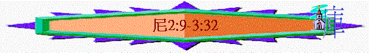
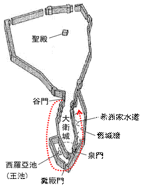

|
主題：重建之路 |
|||||||||||
|
重建城牆 |
重整聖民 |
||||||||||
|
由來 |
安排 |
挑戰 |
完成 |
律法 |
認罪 |
立約 |
留守 |
事奉 |
成禮 |
財物 |
潔淨 |
|
1:1-2:8 |
2:9-3:32 |
4:1-6:19 |
7 |
8 |
9:1-37 |
9:38-10: |
11 |
12:1-26 |
12:27-43 |
12:44-47 |
13 |
一.重建城牆(1-7)
1.重建的由來(1:1-2:8)
2.重建的安排(2:9-3:32)
A.個人獨自的察看
a.起行至河西地
(1)有王的允准
2:9 王派了軍長和馬兵護送我。我到了河西的省長那裏，將王的詔書交給他們。
～大河西的省份在當時是個大省份，也管理猶大的土地
～尼希米及軍隊的護送下，起行到河西的省長那邊，將王的詔書交給有關官員
(2)有敵人的不悅
2:10 和倫人參巴拉，並為奴的亞捫人多比雅，聽見有人來為以色列人求好處，就甚惱怒。
～參巴拉：伊裡芬丁蒲草紙提到他是撒瑪利亞的省長。多比雅：從前可能是一個奴隸，這時是亞捫的省長。《雷氏研讀本》
～雖有神施恩手幫助，不代表沒敵人，他們的敵人參巴拉及多比雅在撒瑪利亞及亞捫，也屬於河西地區，尼希米的來臨，可能威脅他們對猶大地的控制權，所以他們甚惱怒！
b.到達猶大地
2:11 我到了耶路撒冷，在那裏住了三日。
～尼希米到了耶路撒冷地，安頓了三天
(1)暗暗往城牆去
2:12 我夜間起來，有幾個人也一同起來；但 神使我心裏要為耶路撒冷做甚麼事，我並沒有告訴人。除了我騎的牲口以外，也沒有別的牲口在我那裏。
～在夜間不多人的情況，他同幾個人，可能是親信或包括至親兄弟起來往城牆那邊
～而只有尼希米帶他所騎的牲口去
～似乎表達他盡量不想知道他的行踪
(2)清楚神的託負
～他是清楚知道神要他在耶路撒冷作什麼事的，即重建城牆的工作不單是自己的想法，也是神的託負的。
(3)暫時不告訴人
2:16 我往哪裏去，我做甚麼事，官長都不知道。我還沒有告訴猶大平民、祭司、貴冑、官長，和其餘做工的人。
～尼希米為何不將他的行踪告知其他人，可能他知道仍有仇敵窺探他所作的事，他未仔細經觀察城情況而作出具體安排時，不想告知其他人，免仇敵作預先攪擾工作！
(4)察看城牆情況
～他要親眼看看城牆的破壞情況，以及需要什麼程度的修復及思索如何安排人手等事宜

(A)往城牆南面察看
2:13 當夜我出了谷門，往野狗井去（野狗：或譯龍），到了糞廠門，察看耶路撒冷的城牆，見城牆拆毀，城門被火焚燒。
～「谷門」位於當日耶路撒冷城的西面偏南，正對著欣嫩子谷。
～「野狗井」位於谷門的南面，即按反時鐘方向沿欣嫩子谷往南行。
～「糞廠門」位於當日城牆的最南端，人們由此門將垃圾傾倒入欣嫩子谷中。
(B)往城牆東面察看
2:14 我又往前，到了泉門和王池，但所騎的牲口沒有地方過去。
2:15 於是夜間沿溪而上，察看城牆，又轉身進入谷門，就回來了
～泉門位於耶路撒冷城牆的東南面，即糞廠門的東北面，尼希米從糞廠門開始，向東前往了泉門及王池（大概是西羅亞池）《雷氏研讀本》
～然後他沿溪（汲淪溪谷）而上，因為他的驢子或騾子不能越過東牆的粗石堆。他仔細地檢視城牆的破損(斷牆破壁)情況，「又轉身進入谷門」這裡沒有講明究竟是否沿汲淪溪按反時鐘方向繞城一周，或僅往北行走一段路程後即轉身由原路順時鐘方向返回谷門。
B.對全會眾的推動
a.重建的異象
2:17 以後，我對他們說：「我們所遭的難，耶路撒冷怎樣荒涼，城門被火焚燒，你們都看見了。來吧，我們重建耶路撒冷的城牆，免得再受凌辱！」
(1)向整體：異象是給整體百姓
～尼希米對猶大平民、祭司、貴冑、官長，和其餘做工的人發作了異象的信息
(2)帶需要：耶路撒冷怎樣荒涼，城門被火焚燒的景況
(3)有共鳴：是他們看見的
(4)有行動：起來重建耶路撒冷的城牆
(5)有意義：免得再受凌辱
b.見證的激勵
2:18 我告訴他們我 神施恩的手怎樣幫助我，並王對我所說的話。他們就說：「我們起來建造吧！」於是他們奮勇做這善工。
～「施恩」仁慈，美好，可悅；～尼希米分享他過往如何經歷神施恩的手幫助，也分享王允准他重建的說話，用自己的見證激勵他們！
c.奮勇的作工
～「奮勇」(原文兩個字)堅定，強壯(首字)
～他們聽完異象與見證，同心願意起來建造城牆，勇敢堅定的作神之工！
d.敵人的嗤笑
2:19 但和倫人參巴拉，並為奴的亞捫人多比雅和阿拉伯人基善聽見就嗤笑我們，藐視我們，說：「你們做甚麼呢？要背叛王嗎？」
～亞拉伯人基善又名迦施慕（6:6），其人或為亞拉伯聯盟（包括北亞拉伯、以東、猶大以南地，遠達埃及邊境）的酋長。
～有心志為神作工不代表沒有敵人的反對，但和倫人參巴拉，並為奴的亞捫人多比雅和阿拉伯人基善，他們他們以他想背叛波斯王的讒言來恐嚇他，嗤笑他們
e.信心的回應
2:20 我回答他們說：「天上的 神必使我們亨通。我們作他僕人的，要起來建造；你們卻在耶路撒冷無分、無權、無紀念。」
(1)信神必使他們亨通
(2)信敵人在聖城無分
C.重建人手的安排
a.從羊門到古門---北面城牆和城門的修建(3:1-6)
(1) 羊門-->哈米亞樓-->哈楠業樓
3:1 那時，大祭司以利亞實和他的弟兄眾祭司起來建立羊門，分別為聖，安立門扇，又築城牆到哈米亞樓，直到哈楠業樓，分別為聖。
3:2 其次是耶利哥人建造。其次是音利的兒子撒刻建造。
(A)重建的開始人物：宗教的領袖──大祭司及眾祭司
～「以利亞實」神修復，神重建意思，他是大祭司
(B)首先重建的城門：羊門──獻祭之門
～羊門位於耶路撒冷城牆的東北角，獻祭用的羊都由此門進城，因而得名。
(C)特別的分別為聖
～祭司修築城牆到哈米亞樓，直到哈楠業樓部分此奉獻之門時，特別行分別為聖之禮，可能在工程開始之先，讓人知道城牆是分別為聖屬於神的一
～「哈米亞」一百；「樓」高塔，城塔；「哈楠業」神已眷顧
～「哈米亞樓」可能因樓高一百肘，或有一百級階梯，或可容一百軍兵而得名。
(D)緊連的分工修補
～「其次…其次」按原文句子的結構，含有「緊接著他們」或「緊接著他們的手」的意思。本章所敘述的城牆和城門的重建工程，分段分組，彼此互相鄰接，沒有一處遺漏。
～「耶利哥人」指住在耶利哥的猶太人，不是指耶利哥外邦人
～「音利的兒子撒刻建造」並非指此段僅一人在修築，乃是指以他為代表或領導的工作組，成員或許多半屬於他的家族。
(2)魚門
(A)更多的工作
3:3 哈西拿的子孫建立魚門，架橫樑、安門扇，和閂鎖。
3:4 其次是哈哥斯的孫子、烏利亞的兒子米利末修造。其次是米示薩別的孫子、比利迦的兒子米書蘭修造。其次是巴拿的兒子撒督修造。
(a)更大的損毀
～「哈西拿」多刺的意思；「架橫梁」使相遇，使相連；「安」立起的意思。
～「魚門」魚門位於城牆的北面羊門的西邊，當時的漁獲物多由此門運入耶路撒冷城販賣，故得此名。
～「架橫梁、安門扇，和閂鎖」建立魚門的工作，和羊門(參1節)稍有不同，那裡只提到「安立門扇」，可見魚門大概被焚燬殆盡。
(b)更多的人手
～另由魚門至古城的城牆由至少米利末、米書、撒督三個家族的人手修造
(c)更多的承擔
～「哈哥斯的孫子、烏利亞的兒子米利末」他負責兩段工程(3:21節)。
～「米示薩別的孫子、比利迦的兒子米書蘭」他也負責兩段工程(參30節)。
(B)不願的承擔
3:5 其次是提哥亞人修造；但是他們的貴冑不用肩（原文是頸項）擔他們主的工作。
～提哥亞是阿摩司的出生地，位於耶路撒冷以南十英里或十六公里。他們的貴胄拒絕參與工作。
～「肩」有頸項意思，脖子不用肩擔即不參與勞動工作。主指他們的君主，也可能指尼希米或工程的主管。
(3)古門
3:6 巴西亞的兒子耶何耶大與比所玳的兒子米書蘭修造古門，架橫樑，安門扇和閂鎖。
～「古門」原文字義是「舊的、自古就有的」門。古門位於城牆北面的西端。
b.從古門到糞廠門---西面城牆和城門的修建(3:7-14)
(1) 寬牆
(A)不分地區的參與
3:7 其次是基遍人米拉提，米倫人雅頓與基遍人，並屬河西總督所管的米斯巴人修造。
～「基遍人…米倫人…基遍人…米斯巴人」指住在這些地方的猶太人。
(B)不分職業的參與
3:8 其次是銀匠哈海雅的兒子烏薛修造。其次是做香的哈拿尼雅修造。這些人修堅耶路撒冷，直到寬牆。
3:9 其次是管理耶路撒冷一半、戶珥的兒子利法雅修造。
～無論是作銀匠、做香、管理耶路撒冷的領袖，他們不分職業的，也來修造城牆
(C)更有負擔的建造
3:10 其次是哈路抹的兒子耶大雅對著自己的房屋修造。其次是哈沙尼的兒子哈突修造。
～尼希米使住在城牆附近的家庭負責建造對著自己房屋的那部分，他們為著自己的家庭安全，必定更有負擔的作修建城牆的工作。
(2)寬牆-->爐樓（男女也來修造）
3:11 哈琳的兒子瑪基雅和巴哈祟膋漕鄐l哈述修造一段，並修造爐樓。
3:12 其次是管理耶路撒冷那一半、哈羅黑的兒子沙龍和他的女兒們修造。
～大部分學者相信爐樓內的區域是餅鋪區。它在城中的位置，鄰近王宮和聖殿範圍《舊約聖經背景注釋》
～沙龍和他的女兒們也修造，第一次提及婦女也參與此工作
(3)谷門-->糞廠門
3:13 哈嫩和撒挪亞的居民修造谷門，立門，安門扇和閂鎖，又建築城牆一千肘，直到糞廠門。
3:14 管理伯１繺Y、利甲的兒子瑪基雅修造糞廠門，立門，安門扇和閂鎖。
～撒挪亞是地名，位於耶路撒冷西南方約二十二公里
～谷門位於西面城牆的中部稍南處，地勢低窪，靠近山谷，故名谷門。糞廠門是位於城牆最南端，也是最低處，接近欣嫩子谷，人們經由此門將垃圾廢物傾倒在欣嫩子谷中
～伯哈基琳是地名，位於耶路撒冷南面約三公里處。有葡萄園之家意思
c.從糞廠門到凸出來城樓---東面南半部城牆和城門的修建(3:15-26)
(1)管理地的家族參與
3:15 管理米斯巴、各荷西的兒子沙崙修造泉門，立門，蓋門頂，安門扇和閂鎖，又修造靠近王園西羅亞池的牆垣，直到那從大衛城下來的臺階。
3:16 其次是管理伯g一半、押卜的兒子尼希米修造，直到大衛墳地的對面，又到挖成的池子，並勇士的房屋。
～泉門在耶路撒冷南端以北，在西羅亞池附近。
～「蓋門頂」意指門上面有覆蓋物，像屋頂一樣遮住門。
～「伯夙」位於希伯崙以西約六公里半
～「大衛墳地」墳地原文複數字，指包括埋葬大衛、希西家等猶大諸王的王陵。
～「勇士的房屋」可能指軍事指揮總部。
～管理米斯巴、各荷西及管理伯g一半的家族也參與修造城門及城牆工作
(2)利未人的參與 :
3:17 其次是利未人巴尼的兒子利宏修造。其次是管理基伊拉一半、哈沙比雅為他所管的本境修造。
3:18 其次是利未人弟兄中管理基伊拉那一半、希拿達的兒子巴瓦伊修造。
～基伊拉。今名基拉，在希伯侖西北八英里。
(3)保護各方的工程
(A)保護武庫
3:19 其次是管理米斯巴、耶書亞的兒子以謝修造一段，對著武庫的上坡、城牆轉彎之處。
～「武庫」指軍械庫
(B)保護大祭司之家
3:20 其次是薩拜的兒子巴錄竭力修造一段，從城牆轉彎，直到大祭司以利亞實的府門。
3:21 其次是哈哥斯的孫子、烏利亞的兒子米利末修造一段，從以利亞實的府門，直到以利亞實府的盡頭。
～「竭力」有怒火中燒，被激怒意思
～大祭司以利亞實的房子可能建在城牆上或緊鄰著城牆
(C)保護自己的家園
3:22 其次是住平原的祭司修造。
3:23 其次是便雅憫與哈述對著自己的房屋修造。其次是亞難尼的孫子、瑪西雅的兒子亞撒利雅在靠近自己的房屋修造。
3:24 其次是希拿達的兒子賓內修造一段，從亞撒利雅的房屋直到城牆轉彎，又到城角。
～猶大人也對著或靠近自己的家園之城牆作修造工作
(D)保護城裡的王宮
3:25 烏賽的兒子巴拉修造對著城牆的轉彎和王上宮凸出來的城樓，靠近護衛院的那一段。其次是巴錄的兒子毗大雅修造。
3:26 （尼提寧住在俄斐勒，直到朝東水門的對面和凸出來的城樓。）
～「凸出來的城樓」可能是王宮的上層凸出城牆做為眺望之用
～「護衛院」指王宮院中專為監禁特殊犯人之處，或禁衛軍的住所
～「尼提寧」利未人和祭司的僕役；
～「俄斐勒」指一處小山丘，屬大衛城的一部分，位於東面城牆的中部偏北。
～「水門」聖殿和聖城的用水，就由此門挑進，故名為水門。日後以色列人就在水門前的寬闊處聚集，聽講解律法並守住棚節
d.從凸出來的大樓到羊門---東面北半部城牆和城門的修建(3:27-32)
(1)那凸出1來的大樓-->俄斐勒的牆
3:27 其次是提哥亞人又修一段，對著那凸出來的大樓，直到俄斐勒的牆。
～「俄斐勒的牆」即尼提寧人所住俄斐勒那一帶的牆
(2)馬門-->東門
3:28 從馬門往上，眾祭司各對自己的房屋修造。
3:29 其次是音麥的兒子撒督對著自己的房屋修造。其次是守東門、示迦尼的兒子示瑪雅修造。
～「馬門」緊接著俄斐勒的牆的北端，便是馬門；可能因為它附近有馬廄，馬匹由此門進出到汲淪溪谷飲水或到附近山谷中操演，因而得名。
～東門可能為尼希米時代「東城門」，也是今日之耶路撒冷東城門的「金門」之前身
(3)東門-->哈米弗甲門-->城的角樓
3:30 其次是示利米雅的兒子哈拿尼雅和薩拉的第六子哈嫩又修一段。其次是比利迦的兒子米書蘭對著自己的房屋修造。
3:31 其次是銀匠瑪基雅修造到尼提寧和商人的房屋，對著哈米弗甲門，直到城的角樓。
～「哈米弗甲門」又名檢閱門，是東面城牆最北端的城門；猶太人公會的長老就在此城門口坐堂審問並判斷案件。
～「城的角樓」指東面城牆和北面城牆的轉角處的城樓。
(4)城的角樓-->羊門
3:32 銀匠與商人在城的角樓和羊門中間修造。
(A)完整的修造
～從羊門開始，最後圍繞了一圈後，返回羊門，整個聖城的城牆與城門也被安排人手作修造之工作
(B)全面的保護
～修造城牆的目的，是保護住在城牆的不同人士（包括祭司、尼提寧、商人、居民）及不同的地方（民居、王宮、軍庫、軍事指揮總部、城池等）也得著全面的保護
(C)整體的參與
～無論男女、事奉人員、領袖、商人、居民也可參與建造的工作，但是自願的，不能勉強的，而事實上也有人不願作勞動工作的！